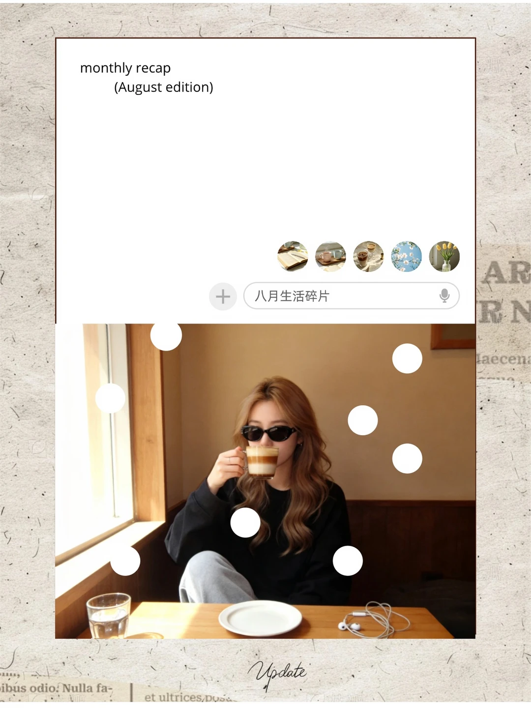
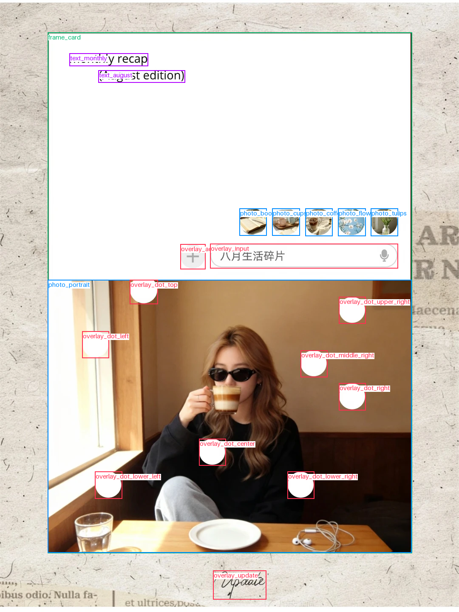

蓝色：照片 · 红色：装饰 · 绿色：相框 · 紫色：文字


解析 JSON · 结构标签 JSON · 校验与修复记录
来源：E:\codes\collage-templates-data\images\1f\1f94c02faf79314d1be73c1a9d333a606ee4ffdd055de4e39960cb66387bf87e.webp复筛原因：咖啡馆人物照配月度回顾文字及纸张边框
教师模型自动标注，尚未人工验收；结构合法不代表框和语义准确。